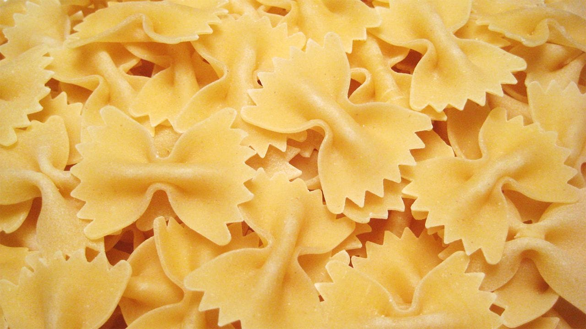

Getting Started
Pasta is a collection of partial SASS files, broken out into their core functions. Individual files can be found in pasta/ingredients/. Place the Pasta directory within your CSS directory and link the file via a common @import function to begin cooking.
Ingredients
_water.scssestablishes a solid reset for core HTML elements and is technically optional. If you prefer a more common reset like Normalize, feel free to comment out_water.scssfrom the main_pasta.scssfile._flour.scsscontains all the variables and mixins used throughout Pasta. This is most likely the file you’ll edit the most as you fine-tune styles specific to your project._eggs.scssstarts to build on the core foundation for the light cross-browser styling associated with Pasta.
Optional Configuration
If all you want to do is adjust basic variables but not core stylings, you can include the declarations before you import Pasta into your main stylesheet:
$type-sans: 'Noto Sans', sans-serif;
$type-serif: 'Noto Serif', serif;
$type-mono: 'Source Code Pro', monospace;
$color-base: #545454;
$color-highlight: #E73C4E;
@import "pasta/start";
After importing Pasta into your main stylesheet, you can use any variables or mixins globally—easily building on top of
_eggs.scssas you establish the look and feel of your project.
Typography
Easily control site-wide typography using simple variables—it’s as easy as setting a numeric value for
font-size.
Headings
Headline 1
<h1>
Headline 2
<h2>
Headline 3
<h3>
Headline 4
<h4>
Headline 5
<h5>
<p> - Aenean lacinia bibendum nulla sed consectetur. Nullam I’d dolor I’d nibh ultricies vehicula ut I’d elit. An inline link. Dapibus ac facilisis in, egestas eget quam. Fusce dapibus, tellus ac cursus commodo, tortor mauris condimentum nibh, ut fermentum massa justo sit amet risus. Integer posuere erat a ante venenatis dapibus posuere velit aliquet. Etiam porta sem malesuada magna mollis euismod.
Lists
When screens reach a width greater than 1024px, styled
<ul>and<ol>elements adapt a hanging punctuation format to better align to corresponding text.
Unordered List
<ul>
- list item
- list item
- list item
Ordered List
<ol>
- list item
- list item
- list item
Code Samples
For code friendly pages, both inline and block level
<code>tags are supported.
Let’s add .this and .that to our <h1> tag.
.this { font-size: 4.5rem; }
.that { color: $super-sweet; }
Responsive Media
Images and video can easily adjust to viewport constraints and respond accordingly.
Responsive Images

Image via Wikipedia
<img>
Responsive Video Embeds
Video embeds are made awesome by simply adding a class of
.videoto a parent containing the embed.
Video via The Geometry of Pasta
<figure class="video__holder"><Embed_Code></figure>
Colors
A global color scale makes it easy to use variations of core colors, keeping UI elements consistent and easy to manage.
Base
-
.color__bg--base -
.color__bg--base-75 -
.color__bg--base-62 -
.color__bg--base-50 -
.color__bg--base-38 -
.color__bg--base-25 -
.color__bg--base-12 -
.color__bg--base-5 -
.color__bg--base-dark
Highlight
-
.color__bg--highlight -
.color__bg--highlight-75 -
.color__bg--highlight-62 -
.color__bg--highlight-50 -
.color__bg--highlight-38 -
.color__bg--highlight-25 -
.color__bg--highlight-12 -
.color__bg--highlight-5 -
.color__bg--highlight-dark